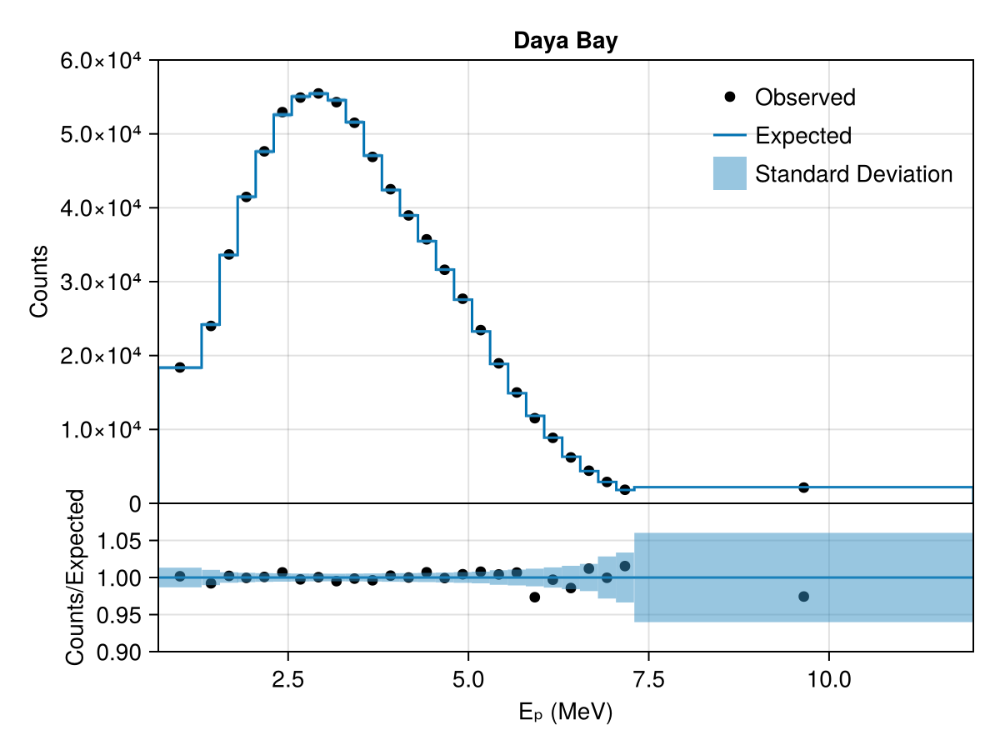

Single Experiment
This example shows how to configure a single experiment with default physics and explore its likelihood by visualizing it and running a simple likelihood scan.
Load the required packages:
using Newtrinos
using DensityInterfaceConfiguring an Experiment
Each experiment has a configure() function that returns a struct with everything needed for analysis. We choose the dayabay experiment. For the default physics model we dont need to specify the physis model in the configure() function:
exp = Newtrinos.dayabay.configure()The returned struct contains:
physics— configured physics modules (oscillations, etc.)params— nominal parameter values (NamedTuple)priors— prior distributions (NamedTuple)assets— data, MC, interpolations, etc.forward_model— callable that maps parameters to a predicted distributionplot— visualization function
Extracting Parameters and Priors
Wrap the experiment in a NamedTuple and use the accessor functions to collect the physical and experimental parameters and priors as NamedTuples:
experiments = (; dayabay = exp)
params = Newtrinos.get_params(experiments)
priors = Newtrinos.get_priors(experiments)get_params and get_priors recursively merge parameters from both the experiment and its physics modules, checking for conflicts.
Evaluating the Likelihood
We use the function generate_likelihood() to calculate the likelihood function for the experiment. If there were more than one experiment, then this would be a joint likelihood.
likelihood = Newtrinos.generate_likelihood(experiments)When you want to work with the log-likelihood function, you can convert it via:
llh = logdensityof(likelihood, params)The maximum likelihood estimator (MLE) can be calculated with
#combine the priors into a product of prior distributions
using BAT #need BAT.jl for the distprod function
priors_d = distprod(;priors...)
#find MLE
llh, log_posterior, mle_result = Newtrinos.find_mle(likelihood, priors_d, params)(-167.51732270714922, -147.89296401643702, (Δm²₂₁ = 8.030943005942308e-5, Δm²₃₁ = 0.002559808085219558, δCP = 0.9999999999999737, θ₁₂ = 0.6552513448720412, θ₁₃ = 0.14798653181352067, θ₂₃ = 0.8556288707523761))Plotting
Most of the experiments provide a plot function. We can use this to visualize a comparison of the observed data with the expected data based on the MLE parameter values:
img = experiments.dayabay.plot(mle_result)
display("image/png", img)
Running a Scan
For analyses, we might want to look at the likelihood values for a certain range of e.g. the reactor mixing angle $\theta_{13}$. For this, we can use a simple Likelihood scan that sets every other parameter to its default value and scans the likelihood over the prior range. If we want to condition a parameter to a certain value, we can use the condition function for that or use Accessors.jl directly. The vars_to_scan dict specifies the number of equidistant scanpoints within the prior range.
using DataStructures
# Fix some parameters
conditional_vars = Dict(:θ₁₂ => params.θ₁₂)
priors = Newtrinos.condition(priors, conditional_vars, params)
vars_to_scan = OrderedDict(:θ₁₃ => 21) # 21 scanpoints
result = Newtrinos.scan(likelihood, priors, vars_to_scan, params)NewtrinosResult((θ₁₃ = [0.1, 0.10500000000000001, 0.11000000000000001, 0.115, 0.12000000000000001, 0.125, 0.13, 0.135, 0.14, 0.14500000000000002 … 0.15500000000000003, 0.16, 0.165, 0.16999999999999998, 0.17500000000000002, 0.18000000000000002, 0.185, 0.19, 0.195, 0.2],), (Δm²₂₁ = [8.030943005942308e-5, 8.030943005942308e-5, 8.030943005942308e-5, 8.030943005942308e-5, 8.030943005942308e-5, 8.030943005942308e-5, 8.030943005942308e-5, 8.030943005942308e-5, 8.030943005942308e-5, 8.030943005942308e-5 … 8.030943005942308e-5, 8.030943005942308e-5, 8.030943005942308e-5, 8.030943005942308e-5, 8.030943005942308e-5, 8.030943005942308e-5, 8.030943005942308e-5, 8.030943005942308e-5, 8.030943005942308e-5, 8.030943005942308e-5], Δm²₃₁ = [0.002559808085219558, 0.002559808085219558, 0.002559808085219558, 0.002559808085219558, 0.002559808085219558, 0.002559808085219558, 0.002559808085219558, 0.002559808085219558, 0.002559808085219558, 0.002559808085219558 … 0.002559808085219558, 0.002559808085219558, 0.002559808085219558, 0.002559808085219558, 0.002559808085219558, 0.002559808085219558, 0.002559808085219558, 0.002559808085219558, 0.002559808085219558, 0.002559808085219558], δCP = [0.9999999999999737, 0.9999999999999737, 0.9999999999999737, 0.9999999999999737, 0.9999999999999737, 0.9999999999999737, 0.9999999999999737, 0.9999999999999737, 0.9999999999999737, 0.9999999999999737 … 0.9999999999999737, 0.9999999999999737, 0.9999999999999737, 0.9999999999999737, 0.9999999999999737, 0.9999999999999737, 0.9999999999999737, 0.9999999999999737, 0.9999999999999737, 0.9999999999999737], θ₁₂ = [0.6552513448720412, 0.6552513448720412, 0.6552513448720412, 0.6552513448720412, 0.6552513448720412, 0.6552513448720412, 0.6552513448720412, 0.6552513448720412, 0.6552513448720412, 0.6552513448720412 … 0.6552513448720412, 0.6552513448720412, 0.6552513448720412, 0.6552513448720412, 0.6552513448720412, 0.6552513448720412, 0.6552513448720412, 0.6552513448720412, 0.6552513448720412, 0.6552513448720412], θ₂₃ = [0.8556288707523761, 0.8556288707523761, 0.8556288707523761, 0.8556288707523761, 0.8556288707523761, 0.8556288707523761, 0.8556288707523761, 0.8556288707523761, 0.8556288707523761, 0.8556288707523761 … 0.8556288707523761, 0.8556288707523761, 0.8556288707523761, 0.8556288707523761, 0.8556288707523761, 0.8556288707523761, 0.8556288707523761, 0.8556288707523761, 0.8556288707523761, 0.8556288707523761], llh = [-268.31466049062885, -252.02419890426034, -236.4218639114421, -221.73999521068032, -208.22676182563646, -196.14693046810694, -185.78268790131804, -177.43452031182292, -171.42215292349076, -168.0855533268919 … -170.90723579321417, -177.8566633572675, -189.06666597437734, -204.99597987149932, -226.13117062063876, -252.9882035256163, -286.11411632571173, -326.08880072878503, -373.5268997527651, -429.07982835376464], log_posterior = [-268.31466049062885, -252.02419890426034, -236.4218639114421, -221.73999521068032, -208.22676182563646, -196.14693046810694, -185.78268790131804, -177.43452031182292, -171.42215292349076, -168.0855533268919 … -170.90723579321417, -177.8566633572675, -189.06666597437734, -204.99597987149932, -226.13117062063876, -252.9882035256163, -286.11411632571173, -326.08880072878503, -373.5268997527651, -429.07982835376464]), Dict{String, Any}("repo_clean" => false, "exec_time" => 1.1070001125335693, "username" => "David", "repo" => "c:\\Users\\David\\IceCube_project\\Newtrinos.jl", "hostname" => "DESKTOP-QSI7DD1", "params" => (Δm²₂₁ = 8.030943005942308e-5, Δm²₃₁ = 0.002559808085219558, δCP = 0.9999999999999737, θ₁₂ = 0.6552513448720412, θ₁₃ = 0.14798653181352067, θ₂₃ = 0.8556288707523761), "date" => "2026-06-22 19:18:30", "task" => "scan", "vars_to_scan" => OrderedDict(:θ₁₃ => 21), "commit_hash" => "c23e6b5ac029873c75a9a2678ebbc98c5c90b247"…))The scan returns a NewtrinosResult object that contains the scan axes values, the log-likelihood and log-posterior at every scan point and meta data of the execution.